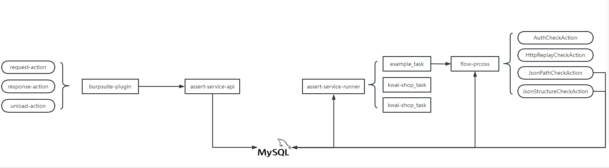

接口迭代黑盒监控工具
企业内部对于代码/接口的改动发现、扫描及漏洞处理时间非常短，不管是基于git hook、AST、JaCoCo或各种精准测试能力在基于代码的基础上均可以做到快速识别，而从外部测试/白帽子角度仅能从黑盒角度判断是否存在接口迭代，从漏洞的角度看接口安全性与安全团队能力成熟度成正比，即新增接口安全测试覆盖度较高，那历史存量接口做迭代是否会100%覆盖？是否更容易出现漏洞？
为什么要造轮子？整体评估从流量采集到断言测试整体开发成本不高且迭代成本更低。需要的不只是一个自动化测试系统，而是一个更好用的、可以高度订制的自动化测试系统。
0x01 整体架构图
 1
2
3
4
5
6
7
8
9
10
11
12
13.
├── security-assert-plugin
│ ├── pom.xml
│ ├── README.md
│ ├── security-assert-plugin.iml
│ ├── src
│ └── target
└── security-assert-service
├── db
├── pom.xml
├── security-assert-service-api
├── security-assert-service-component
└── security-assert-service-runnerIExtensionStateListener、IProxyListener监控获取request、response信息以及在插件关闭时发送状态消息； - service-api：用于流量采集且经过自定义request\response过滤去重处理后存储到mysql中，request和response原子性通过burpsuite的iInterceptedProxyMessage.getMessageReference()来保证； - server-runner：实现流量定期回放、流式处理assert的能力，支持在interface上做横向扩展，且对于不符合预期做mysql处理。todo:该部分没有存储完成状态机，后续可优化存储到clickhouse中；
0x02 service-api关键信息
security-assert-service/security-assert-service-component/src/main/java/com/kevinsa/security/service/service/collect 1
2
3
4
5
6
7
8├── base
│ ├── FilterActionUnit.java
│ ├── FilterActionUnitTemplate.java
│ └── ProcessContext.java
├── BaseExecutor.java
└── filterAction
├── request
└── responsebase中定义后于过滤处理的基本方法，BaseExecutor中定义入口函数；
1 | public interface FilterActionUnit<T> { |
0x03 server-runner关键信息
3.1 周期函数入口
security-assert-service/security-assert-service-runner/src/main/java/com/kevinsa/security/service/runner/base/ScheduledBaseTask.java 继承ApplicationRunner，在run(ApplicationArguments args)中做具体的任务实现逻辑。 1
2
3
4
5
6
7
8
9
10
11
12
13
14
15
16
17
18
public interface ScheduledBaseTask extends ApplicationRunner {
String taskName();
String bizMsg();
Integer initialDelayHour();
Integer periodHour();
Runnable exec();
}
3.2 流式处理
security-assert&fqn=com.kevinsa.security.service.service.assertCheck.AssertExecutorFactory 中提供入口函数 1
2
3
4
5
6
7
8public class AssertExecutorFactory {
public DefaultProcessContext createDefaultContext() {
DefaultProcessContext context = new DefaultProcessContext();
context.setBizId(DefaultFlowConfig.DEFAULT_ASSERT_EXECUTOR_FLOW);
return context;
}
}security-assert-service/security-assert-service-component/src/main/java/com/kevinsa/security/service/service/assertCheck/flowConfig/DefaultFlowConfig.java 1
2
3
4
5
6
7
8
9
10
11
12
13
14
15
16
17
18
19
20
21
22
23
24
25
26
27
28
29
30
31
32
33
34
35
36
37
38
39
40
41
42
43public class DefaultFlowConfig {
private AssertProcessFlow processFlow;
public static final String DEFAULT_ASSERT_EXECUTOR_FLOW = "default_assert_executor_flow";
public void processFlow() {
Map<String, ProcessTemplate> templateConfig = processFlow.getTemplateConfig();
templateConfig.put(DEFAULT_ASSERT_EXECUTOR_FLOW, defaultAssertExecutor());
processFlow.setTemplateConfig(templateConfig);
}
public ProcessTemplate defaultAssertExecutor() {
ProcessTemplate template = new ProcessTemplate();
List<AssertStepAction> processConfig = Lists.newArrayList();
processConfig.add(authCheckAction());
processConfig.add(httpReplayCheckAction());
processConfig.add(jsonPathCheckAction());
processConfig.add(jsonStructureCheckAction());
template.setProcessConfig(processConfig);
return template;
}
AuthCheckAction authCheckAction() {return new AuthCheckAction();}
HttpReplayCheckAction httpReplayCheckAction() {return new HttpReplayCheckAction();}
JsonStructureCheckAction jsonStructureCheckAction() {return new JsonStructureCheckAction();}
JsonPathCheckAction jsonPathCheckAction() {return new JsonPathCheckAction();}
}
0x04 支持assert类型
在security-assert-service/security-assert-service-component/src/main/java/com/kevinsa/security/service/service/operator中定义基本的运算符配合jsonPath做assert处理 1
2
3
4
5
6
7
8public enum OperatorTypeEnums {
UNKNOWN("unknown", "未知操作类型"),
EQU("EQU", "equal || =="),
NEQ("NEQ", "not equal || !="),
MT("MT", "more than || >"),
LT("LT", "less than || <"),
;
}
4.1 实例
{"type": "EQU", "value": 1, "jsonPath": "$.result"} 即说明对response做$.result jsonPath解析后的value，做EUQ运算，即value.EUQ(1)
0x05 example
以kwai-xiaodian为例子给出部分实现逻辑
5.1 流量采集的FilterActionUnit
request过滤：ReqDefaultFilterAction.java response过滤：RespDefaultFilterAction
5.2 周期任务验证
- 周期任务：ExampleAssertTask.java
- 处理模板：DefaultFlowConfig.java
5.3 assert_rule
1 | mysql> select * from assert_action_rule where type != 0; |
0x06 feature
- burpsuite-puligin：目前插件不支持UI图形化，即流量收集的service地址硬编码；
- 状态机：目前mysql中仅存储原始流量信息、assert规则信息、assert规则结果信息，没有对流量重放、assert判断等状态机做存储，利于问题排查，规划做clickhouse存储并支持自定义状态机；